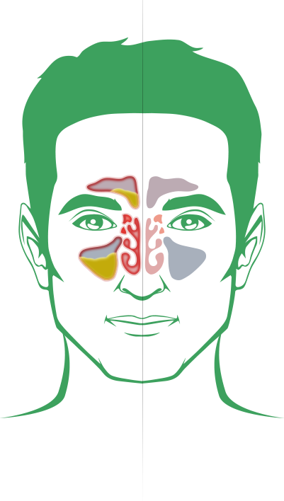
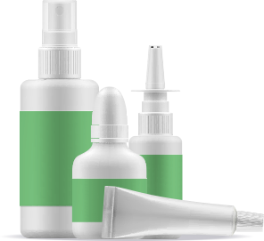
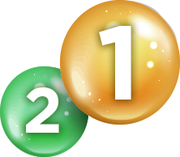
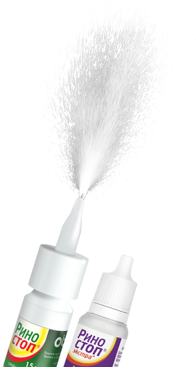

Сосудосуживающие
лекарственные
средства
лекарственные
средства
Почему отекает слизистая
и не дышит нос?
и не дышит нос?
Заложенность носа и затруднение носового дыхания, сопровождающие большинство простудных (особенно вирусных) и аллергических заболеваний у детей и взрослых, обусловлены отеком слизистой оболочки полости носа.
Причиной же отека является рефлекторное расширение ее кровеносных сосудов: сначала – как реакция на холод, направленная на согревание вдыхаемого воздуха, затем – как реакция на активность вирусов и/или аллергенов, попавших на поверхность слизистой. Усиленный приток крови приводит к активной работе носовых желез, продуцирующих слизь. Все это становится причиной отечности и гиперемии (переполненности сосудов кровью) слизистой полости носа и носоглотки, а также сужения просвета носовых ходов и, как следствие, – заложенности и затруднения носового дыхания у детей и взрослых.
Причиной же отека является рефлекторное расширение ее кровеносных сосудов: сначала – как реакция на холод, направленная на согревание вдыхаемого воздуха, затем – как реакция на активность вирусов и/или аллергенов, попавших на поверхность слизистой. Усиленный приток крови приводит к активной работе носовых желез, продуцирующих слизь. Все это становится причиной отечности и гиперемии (переполненности сосудов кровью) слизистой полости носа и носоглотки, а также сужения просвета носовых ходов и, как следствие, – заложенности и затруднения носового дыхания у детей и взрослых.
Что такое
сосудосуживающие
средства?
сосудосуживающие
средства?
Сосудосуживающие препараты или, как их еще называют в медицине, деконгестанты, являются средствами «скорой помощи» при затрудненном носовом дыхании и заложенности носа. Их местное применение сужает кровеносные сосуды, уменьшает кровенаполнение слизистой оболочки носа, способствуя устранению ее отека и снижению выработки слизи. Как следствие, восстанавливается проходимость носовых ходов и нормализуется дыхание. Таким образом, сосудосуживающие средства от заложенности носа помогают:
облегчить носовое дыхание
быстро устранить отек и гиперемию слизистой;
снять заложенность, восстанавливая проходимость носовых ходов;

до преминения
сосудосуживающего средствапосле преминения
сосудосуживающего средства
сосудосуживающего средствапосле преминения
сосудосуживающего средства
Что такое
сосудосуживающие
средства?
сосудосуживающие
средства?

По форме выпуска: капли, гели или спреиВ настоящее время считается, что при выборе средства от заложенности носа и насморка предпочтение следует отдавать назальным деконгестантам в виде спрея, поскольку эта лекарственная форма наиболее удобна в использовании. Она обеспечивает равномерное одномоментное орошение всей поверхности слизистой оболочки носа и точное дозирование препарата, что, соответственно, снижает риск передозировки и развития побочных эффектов.
По основной активной молекуле действующего веществаСовременная фармацевтическая промышленность синтезирует несколько химических молекул, которые входят в состав большинства сосудосуживающих средств: нафазолин, оксиметазолин, ксилометазолин, тетразолин, трамозолин, фенилэфрин и другие. Одной из наиболее популярных и востребованных во всем мире является молекула ксилометазолина, обладающая оптимальными фармакологическими характеристиками. В тоже время популярной и востребованной также является молекула оксиметазолина.

По количеству активных компонентов в составе лекарственного препаратаВыделяют однокомпонентные и комбинированные препараты от заложенности носа. В состав комбинированных лекарственных средств, помимо непосредственно сосудосуживающего вещества, входят дополнительные ингредиенты, обладающие увлажняющим, противоаллергическим, муколитическим, противовоспалительным или антибактериальным действием. Довольно часто в составе сосудосуживающих средств для носа можно также встретить растительные экстракты – эвкалипт, ромашку, календулу, ментол или другие. Однако следует знать, что не всегда факт наличия какого-либо дополнительного компонента обеспечивает дополнительные терапевтические свойства препарата. Если лекарственное средство от насморка и заложенности носа обладает дополнительными лечебными характеристиками, его ингредиенты должны быть отражены в инструкции по медицинскому применению в перечне активных компонентов, а не внутри списка вспомогательных веществ.
По продолжительности сосудосуживающего действияПо продолжительност и сосудосуживающего действияПрактически все используемые при заложенности носа деконгестанты обладают быстрым и выраженным сосудосуживающим действием. Эффект от их использования заметен в течение первых нескольких минут с момента применения. Вместе с тем, молекулы обладают разной продолжительностью действия и, соответственно, имеют разную кратность применения в течения дня. Условно различают препараты:
1) короткого действия (в течение 4–6 часов) – нафазолин, фенилэфрин, татризолин;
2) более длительного действия (в интервале 8–12 часов) – ксилометазолин, оксиметазолин, трамозолин. В таблице, представленной ниже, можно получить общую информацию по особенностям и свойствам разных молекул:
1) короткого действия (в течение 4–6 часов) – нафазолин, фенилэфрин, татризолин;
2) более длительного действия (в интервале 8–12 часов) – ксилометазолин, оксиметазолин, трамозолин. В таблице, представленной ниже, можно получить общую информацию по особенностям и свойствам разных молекул:
| скорость наступления єффекта | продолжительность действия | кратность использования | начилие детских форм | возраст использования | |
| ксилометазолин | до 10 часов | 2-3 раза в день | с 2 лет | ||
| оксиметазолин | до 12 часов | 2-3 раза в день | с 0 лет | ||
| трамозолин | 8-10 часов | до 4 раз в день | с 6 лет | ||
| нафозолин | 4-6 часов | до 6-8- раз в день | с 1 года | ||
| тетризолин | 4-8 часов | до 6-8- раз в день | с 2 лет |
О чем важно помнить
при использовании
сосудосуживающих препаратов?
при использовании
сосудосуживающих препаратов?
Деконгестанты могут быть использованы при лечении:
острого ринита бактериальной или вирусной природы;
острого синусита и обострении хронического;
острого отита
сезонного и круглогодичного аллергического ринита;
в качестве вспомогательных средств при подготовке к диагностическим процедурам и в первые дни после проведения

Спрей является наиболее востребованным для применения у взрослых и детей преимущественно старше «садикового» возраста, спрей обеспечивает равномерное и полноценное орошение слизистой носа. В тоже время для детей младшего возраста, особенно грудных и новорожденных детей, предпочтительнее использовать капли с целью более бережного и безопасного поступления лекарственного средства в маленький носик ребенка.При использовании сосудосуживающих препаратов для носа необходимо четко соблюдать инструкцию, не превышать дозировку и рекомендованную частоту применения; даже средства короткой продолжительности действия нельзя использовать с интервалом менее 3 часов.Облегчают дыхание на период от 4 до 12 часов, в зависимости от действующего вещества.Длительность применения капель и спреев для носа не должна превышать 5–7 дней, оптимальный срок лечения – 3–5 дней. В противном случае возможно развитие привыкания к действию препаратов, с которым в последующем справиться довольно сложно.Каждое сосудосуживающее средство от заложенности носа и насморка должно применяться с учетом возрастных особенностей.Действие сосудосуживающих препаратов для носа наступает в течение нескольких минут.
При наличии признаков зависимости необходимо обратиться к лор-врачу.
Сосудосуживающий компонент в составе спреев РИНОСТОП®
ксилометазолин
Молекула активного вещества обеспечивает:
- быстрое начало действия – в течение нескольких минут;
- стойкий продолжительный по времени эффект – до 10 часов;
- удобство применения: всего 2–3 впрыскивания в сутки в каждый носовой ход.
0.1%0.05%
Выпуск двух вариантов концентрации позволяет использовать средство при заложенности носа у детей с 2-летнего возраста и взрослых.
Сосудосуживающий компонент в составе капель Риностоп® ЭКстра
Оксиметазолин
Молекула активного вещества обеспечивает:
- быстрое начало действия – в течение нескольких минут;
- стойкий продолжительный по времени эффект – до 12 часов;
- удобство применения: закапывание в каждый носовой ход всего 2-3 раза в сутки
0.1%0.05%0.025%
Выпуск в трех вариантах концентраций позволяет использовать средство при насморке и заложенности носа у детей с первых дней жизни и взрослых.